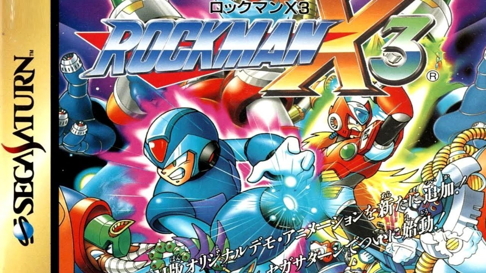

A História do Megaman X3
imagem do jogo Megaman X3
Mega Man X3 (estilizado como MEGA MAN X³), conhecido como Rockman X3 (のX3) no Japão, é um jogo lançado pela Capcom para o Super Nintendo Entertainment System (SNES). O jogo foi originalmente lançado no Japão em 1 de dezembro de 1995, e mais tarde nas regiões norte-americanas e PAL em 1996. É o terceiro jogo da série Mega Man X e o último a aparecer no SNES. Mega Man X3 se passa em um futuro fictício no qual o mundo é povoado por humanos e robôs inteligentes chamados "Reploids". Como seus criadores humanos, alguns reploides se envolvem em crimes destrutivos e são rotulados como "Mavericks". Depois de derrotar duas vezes o líder Maverick Sigma, os heróis Mega Man X e Zero devem lutar contra um cientista reploid chamado Dr. Doppler e sua utopia de seguidores Maverick.
Mega Man X3 segue a tradição tanto da série original Mega Man quanto da série Mega Man X como um jogo padrão de plataforma de ação. O jogador atravessa uma série de oito estágios em qualquer ordem, enquanto ganha vários power-ups e toma a arma especial do chefe final de cada etapa. Mega Man X3 é o primeiro jogo da série em que Zero é um personagem jogável (embora em forma limitada) além de X. Assim como seu antecessor, Mega Man X2, o X3 possui o chip "Cx4" para permitir alguns gráficos vetoriais 3D limitados e efeitos de transparência.
Uma versão de 32 bits de Mega Man X3 foi lançada no PlayStation, Sega Saturn e Windows em vários países. Uma versão 3DO Interactive Multiplayer foi planejada, mas foi cancelada devido à falha do console. [7] Esta versão foi incluída na Coleção Mega Man X norte-americana em 2006. O jogo também foi portado para celulares japoneses em 2010. A recepção crítica para o Mega Man X3 tem sido acima da média. No entanto, o jogo, particularmente a versão de 32 bits, recebeu críticas diversas dos críticos por sua falta de melhorias na série.
A Capcom anunciou que a versão SNES do Mega Man X3 chegaria ao Wii U Virtual Console em 2014. [8] Foi lançado na América do Norte em 28 de agosto de 2014, Japão em 8 de outubro de 2014, e as regiões PAL em 6 de novembro de 2014. [9]Recentemente, a versão SNES foi lançada para PC, assim como para PlayStation 4, Xbox One e Nintendo Switch como parte da Mega Man X Legacy Collection (Rockman X Anniversary Collection no Japão), que foi lançada em 24 de julho de 2018, em todo o mundo e 26 de julho de 2018, no Japão. [10][11]
A história do Mega Man X3 se passa durante o século 22 (ano "21XX"), no qual após o Mega Man X2 os humanos coexistem com robôs inteligentes chamados "Reploids" (androides replicantes). Devido ao seu livre arbítrio, alguns reploides são propensos a atividades criminosas e dizem que vão "Maverick". Dr. Cain, o inventor dos Reploids, estabelece uma força-tarefa militar chamada "Caçadores Maverick" para impedi-lo. [4] Mesmo depois de dois esforços bem sucedidos dos Caçadores Mega Man X e Zero para impedir um líder Maverick chamado Sigma de tentar exterminar a raça humana, a atividade de Maverick parece continuar. [4] No entanto, a ameaça dos Mavericks é mais tarde neutralizada graças à tecnologia do cientista reploide Dr. Doppler, que impede os Mavericks de enlouquecer. [4] Os Reploides reformados formam uma utopia perto de seu novo mentor chamado "Dopple Town". [12] Parecia que tudo está bem até que os antigos Reploids de repente reverter e mais uma vez começar a causar problemas, mesmo indo tão longe quanto atacar a sede de Hunter. Doppler é responsabilizado, e X e Zero são enviados para conter a nova ameaça. [4][13]
Uma vez que os dois heróis derrotam Doppler e as forças que juraram lealdade a ele, o cientista volta aos seus sentidos e percebe todo o dano que ele fez. Ele explica que Sigma está vivo como um vírus de computador, e que Doppler foi corrompido a fim de criar um novo corpo para Sigma. [14] X procura Sigma, e após uma intensa batalha, o Vírus Sigma em sua forma pura persegue X na tentativa de infectá-lo e possuí-lo. [15] Uma vez que X se encontra em um beco sem saída, uma das duas coisas pode acontecer.